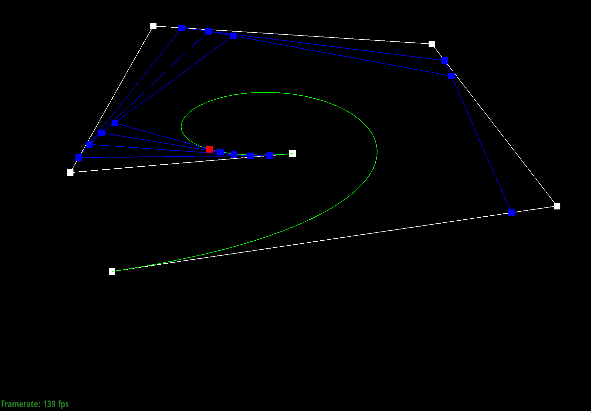

Overview
This project focused on ideas of geometric modeling focusing specifically on Bezier curves and surfaces via the de Casteljau algorithm and triangle meshes through the usage of the half-edge data structure and loop subdivision to work with them. This project allowed us to take a look at how geometry is used in computer graphics to display images. To interact with and see how these concepts are utilized in computer graphics, an interactive GUI exists where we can toggle different settings and see the impacts that different algorithms make. The first section of the project, Tasks 1 and 2, focus on the usage of de Casteljau algorithm to evaluate Bezier curves and surfaces that allow more complex objects to be displayed. The second section, Tasks 3 to 6, focus on Triangle Meshes and working with the half-edge data structure to traverse these meshes and upscale them. In this project we learned a lot more about how to work with meshes and de Casteljau algorithm to create surfaces.
Section I: Bezier Curves and Surfaces
Bezier curves and surfaces are important in computer graphics as they allow us to model smooth and infinitely scalable curves and surfaces. These curves are defined by a set of n + 1 points for a degree n curve and a parameter t. Surfaces are defined by (n + 1) * (m + 1) control points and two parameters u and v. de Casteljau algorithm is a way for us to evaluate these curves and surfaces based on any set of control points and parameters.
Part 1: Bezier curves with 1D de Casteljau subdivision
The algorithm works by essentially inserting new points between two points through linear interpolation, connecting the newly create points, and repeating the process recursively until we end up with a curve. Each recursive call is one level of subdivision allowing us to get closer and closer to a complete curve shape. This process can be done for any set of n control points defined as p1, ..., pn and a set float of t that we evaluate the curve on. At each recursive step we use a lerp to create n - 1 intermediate control points based on t and continue this process until we end up with a singular control point left which lies on the Bezier curve at parameter t. These intermmediate points defined as p`1, .., p`n are caluclated by doing p`i = lerp(pi , pi+1 , t) = (1 - t)pi + tpi + 1.
Our implementation evaluates a single step of the de Casteljau algorithm. The algorithm works by first checking if the
vector of points inputed in is already of size 1 or 0 and if so simply return back the original points since we already
gave a singular point. If that is not the case we create a vector called intermediate of type
i = 1 to points.size() - 1 since the
calculation uses i along with i + 1. Within each step of the for loop we do a lerp via
lerp(t, points[i], points[i + 1]) and create the intermediate point which we then push to the
intermediate store.


|
|

|
|
|

|

|
|

|

|

|
Part 2: Bezier surfaces with separable 1D de Casteljau subdivision
The main algorithm that is used to evaluate Bezier surfaces is very similar to that which is used for Bezier edges. Now, instead of having a single vector of points that we want to evaluate on, we have a vector of vectors and 2 points that we evaluate. Each of these inner vectors are Bezier curves that we will need to evaluate point u on in order to create control points for the "moving" Bezier curve. We then do a basic 1D de Casteljau algorithm, the one used for an edge, to evaluate point v on the "moving" curve that was just created.
Our implementation splits up this process into 4 functions that allow us to run the entire process. These functions are
BezierPatch::evaluate(...), BezierPatch::evaluate1D(...), and BezierPatch::evaluateStep(...).
evaluate is how the algorithm gets ran. It takes in an input of u and v and
begins the algorithm by calling evaluate1D on each of the vectors of control points stored in controlPoints
along with u to evaluate point u on each of the Bezeir curves. evaluate1D achieves this by running
evaluateStep until only a singular point is left which is then returned. evaluateStep does the same
things as in Part 1 but instead working with Vector3D points. After these points are calculated for each row,
evaluate then does one more call to evaluate1D with the parameter v to calculate the final point
on the "moving" curve that was caluclated by the row points.


Section II: Triangle Meshes and Half-Edge Data Structure
Utilizing half-edge meshes we are able to create triangle meshes and create 3D objects.This method is different from that of Section I. While Bezeir curves are better than triangle meshes for representing smooth surfaces and also require less memory since we simply need to evaluate the points to create our surfaces, they are more difficult to render directly. As such triangle meshes are sometimes preferred even with the tradeoffs.
Part 3: Average normals for half-edge meshes
Average normals allow us to create different levels of shading within a half-edge mesh by shading in individual vertices.
We achieve this within our code by getting an approximate unit normal at each vertex by computing the area-weighted average
of the normals of neighboring faces, then normalizing. To do this we create a Vector3D area_weighted_vertex_normal
that is set to a 0, 0, 0 Vector that we can use to keep track of the weighted vertex normal. We then go about traversing
each of the neighboring vertices by using a do-while loop on the a half-edge h which is set to the original half-edge.
As long as the face of our current half-edge is not a boundary, we retrieve the 3 vertices that define the current face.
Using these 3 vertices we compute the 2 vectors that lay along the face by doing Vector3D vector1 = vertex1 - vertex0
and Vector3D vector2 = vertex2 - vertex0. Using these two vectors we calculate the normal vector by taking
the cross product of the vectors we just created. We then take the norm of the normal vector and divide by two to get the
area of the triangle face double tri_face_area. Using this value and the face's normal value we increment
area_weighted_vertex_normal += (tri_face_area * face_normal). After this happens we advance h
h = h->twin()->next() to continue our traversal until we return to the original half-edge. Once we return
to the original half-edge we can simply return area_weighted_vertex_normal.unit() giving us the unit normal.

|

|
|
|
|

|

|
Part 4: Half-edge flip

Part 5: Half-edge split


Part 6: Loop subdivision for mesh upsampling
Section III: Optional Extra Credit
If you are not participating in the optional mesh competition, don't worry about this section!